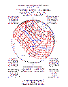

Timing of WW-III according to Islamic Texts
It is said in one of the Hadeeths (which are Islamic texts that record the preaching of Prophet Muhammad and interpret the Holy Koran) that the sign of imminent appearance of the Antichrist (Dajjal), Imam Mahdi and the second coming of Jesus Christ will be the occurrence of both a solar and a lunar eclipse in the Islamic holy month of Ramadan. It is said that the war of the Antichrist will take place in the year following these occurrences.
Based on this prophecy, it is possible to speculate the timing of the war. Islamic calendar is a lunar calendar. So a particular day under that calendar does not occur around the same day of the solar Roman calendar. Roughly speaking, every year the month of Ramadan starts 11 days before the day on which it started in the previous year, according to the solar calendar. For example, Ramadan started on 17th November in 2001. So in 2002 it will start approximately on 6th November, in 2003 on 26th October and so on. Based on this assumption, the approximate period of Ramadan according to the English calendar for the coming years can be worked out as follows:
| 2001 | 2002 | 2003 | 2004 |
| 16 Nov - 16 Dec | 5 Nov - 5 Dec | 25 Oct - 25 Nov | 14 Oct - 14 Nov |
| 2005 | 2006 | 2007 | 2008 |
| 3 Oct - 3 Nov | 22 Sep - 22 Oct | 11 Sep - 11 Oct | 1 Sep - 1 Oct |
| 2009 | 2010 | ||
| 21 Aug - 21 Sep | 10 Aug - 10 Sep |
Now we have to find out those solar and lunar eclipses during this period, total, partial or annular, which will be visible from the Middle East and find out whether both a solar and a lunar eclipse takes place in any of the above-mentioned periods.
Solar & lunar eclipses that both occur during
Ramadan in the period 2001-2010 are in 2002 (4 Dec & 20 Nov respectively), 2003
(23 Nov & 8 Nov respectively), 2004 (14 Oct & 28 Oct respectively) and 2005 (3
Oct & 17 Oct respectively). The path/visibility of the eclipses are as follows :
2002:
Solar - South Africa, Indonesia, Australia
Lunar (Penumbral) - Americas, Africa, Europe, East Asia
2003:
Solar- Australia, New Zealand, South America
Lunar (Total) - Americas, Europe, Africa, Central Asia
2004:
Solar: NE Asia, Alaska, Hawaii
Lunar (Total) - America, Europe, Africa, Central Asia
2005:
Solar (annular) : Europe, Africa, S. Asia
Lunar (Partial) - Asia, Australia, Pacific, North America

The Partial Lunar Eclipse taking place on 17th October 2005 can be observed from part of the Arabian Peninsula and Middle East, Iran and part of Europe during moon-rise.
Since the Hadeeth says that the war will take place in the year following the year when these eclipses take place, we get the time of the war as end of 2006 or 2007 as Nostradamus seems to indicate in X.74 .